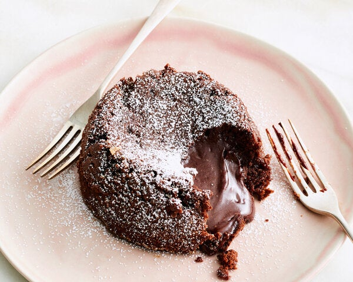

Molten Chocolate Cake Dessert
Chocolate lava cakes gained popularity in the late 1990s thanks to the chef Jean-Georges Vongerichten, and they have stuck around on dessert menus for good reason: They are rich chocolate cake and velvety sauce all in one, and they are surprisingly easy to make in under an hour.
Ingredients
- Yield:2 servings
- 3 ounces/85 grams bittersweet chocolate, 70 to 74 percent cacao (not chips), chopped (about ½ cup)
- 3 tablespoons unsalted butter, cut into cubes, plus more for the ramekin
- 3 tablespoons granulated sugar, plus more for the ramekin
- 1 large egg
- 1 large egg yolk
- 1/2 teaspoon vanilla extract
- 2 tablespoons all-purpose flour
- 2 tablespoons all-purpose flour
Steps
- Heat oven to 425 degrees and butter a 10-ounce ramekin. Dust the buttered ramekin with granulated sugar.
- Combine the chocolate and 3 tablespoons butter in a heat-safe bowl set over a pan of simmering water. Cook, stirring occasionally, until melted and smooth. (Alternatively, combine in a bowl and microwave in 30-second blasts, stirring in between, until melted and smooth, about 1 minute.) Remove from the heat and set aside.
- In a medium bowl, combine the 3 tablespoons sugar, egg, egg yolk, vanilla and salt. Whisk vigorously until the mixture is thick, foamy and pale, about 2 minutes. Whisk in the flour until smooth.
- Using a spatula, add the chocolate to the egg mixture and stir gently until combined.
- Pour the mixture into the ramekin. Bake for 12 to 14 minutes or until the edges are set and puffed, but the center is still soft when lightly pressed. (You can also cover and refrigerate the batter up to a day in advance. Add an additional minute or 2 to baking time if you are baking the cake directly from the refrigerator.)
- Use an offset spatula or small knife to loosen the edges of the cake from the ramekin. Place a plate over the ramekin and carefully invert the warm cake. Use an oven mitt or clean kitchen towel to remove the ramekin, dust the cake with confectioners’ sugar and serve with ice cream or whipped cream.